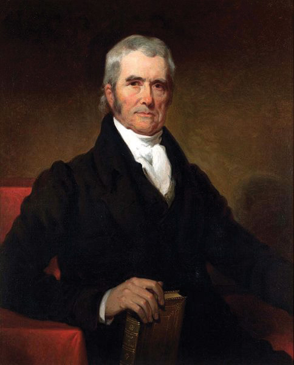
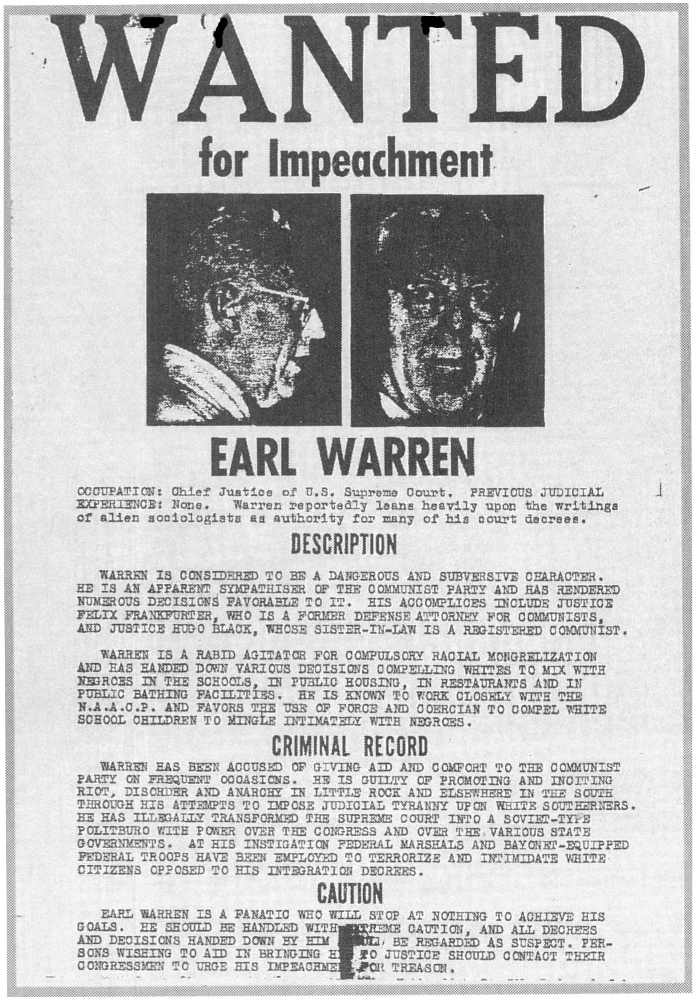

After reading this section, you should be able to answer the following questions:
In Federalist No. 78, Alexander Hamilton described the courts as “the least dangerous” branch of government. Yet, they do possess considerable power. For example, because of the Court’s 5–4 decision in 2002, the more than seven million public high school students engaged in “competitive” extracurricular activities—including cheerleading, Future Farmers of America, Spanish club, and choir—can be required to submit to random drug testing.Board of Education v. Earls, 536 US 822 (2002).
The federal courts’ most significant power is judicial reviewThe authority of the federal courts, especially the Supreme Court, to decide whether a state or federal law violates the US Constitution.. Exercising it, they can refuse to apply a state or federal law because, in their judgment, it violates the US Constitution.
Judicial review was asserted by the US Supreme Court in 1803 in the decision of Chief Justice John Marshall in the case of Marbury v. Madison (5 US 137, 1803).
Figure 15.3 John Marshall
Marshall was chief justice of the Supreme Court from 1801 to 1835 and the author of many decisions, including Marbury v. Madison.
Source: Painting by Henry Inman, http://commons.wikimedia.org/wiki/File:John_Marshall_by_Henry _Inman,_1832.jpg.
After losing the election of 1800, John Adams made a flurry of forty-two appointments of justices of the peace for Washington, DC in the last days of his presidency. His purpose in doing so was to ensure that the judiciary would remain dominated by his Federalist party. The Senate approved the appointments, and Secretary of State John Marshall stamped the officials’ commissions with the Great Seal of the United States. But no one in the outgoing administration delivered the signed and sealed commissions to the appointees. The new president, Thomas Jefferson, instructed his secretary of state, James Madison, not to deliver them. One appointee, William Marbury, sued, asking the Supreme Court to issue a writ of mandamus, a court order requiring Madison to hand over the commission.
The case went directly to the Supreme Court under its original jurisdiction. John Marshall was now chief justice, having been appointed by Adams and confirmed by the Senate. He had a dilemma: a prominent Federalist, he was sympathetic to Marbury, but President Jefferson would likely refuse to obey a ruling from the Court in Marbury’s favor. However, ruling in favor of Madison would permit an executive official to defy the provisions of the law without penalty.
Marshall’s solution was a political masterpiece. The Court ruled that Marbury was entitled to his commission and that Madison had broken the law by not delivering it. But it also ruled that the part of the Judiciary Act of 1789 granting the Court the power to issue writs of mandamus was unconstitutional because it expanded the original jurisdiction of the Supreme Court beyond its definition in Article III; this expansion could be done only by a constitutional amendment. Therefore, Marbury’s suit could not be heard by the Supreme Court. The decision simultaneously supported Marbury and the Federalists, did not challenge Jefferson, and relinquished the Court’s power to issue writs of mandamus. Above all, it asserted the prerogative of judicial review for the Supreme Court.This discussion is based in part on Jean Edward Smith, John Marshall: Definer of a Nation (New York: Holt, 1996), introduction and chap. 13. For an analysis of the distinction between judicial review and judicial supremacy (the obligation of officials to follow the Court’s reasoning in the future), and the politics involved in the latter, see Keith E. Whittington, Political Foundations of Judicial Supremacy: The Presidency, the Supreme Court, and Constitutional Leadership in US History (Princeton, NJ: Princeton University Press, 2007).
For forty years after Marbury, the Court did not overturn a single law of Congress. And when it finally did, it was the Dred Scott decision, which dramatically damaged the Court’s power. The Court ruled that people of African descent who were slaves (and their descendants, whether or not they were slaves) were not protected by the Constitution and could never be US citizens. The Court also held that the US Congress had no authority to prohibit slavery in federal territories.Dred Scott v. Sandford, 60 US 393 (1857).
The pace of judicial review picked up in the 1960s and continues to this day. The Supreme Court has invalidated an average of eighteen federal laws per decade. The Court has displayed even less compunction about voiding state laws. For example, the famous Brown v. Board of Education of Topeka, Kansas desegregation case overturned statutes from Kansas, Delaware, South Carolina, and Virginia that either required or permitted segregated public schools. The average number of state and local laws invalidated per decade is 122, although it has fluctuated from a high of 195 to a low for the period 2000–2008 of 34.Lawrence Baum, The Supreme Court, 10th ed. (Washington, DC: CQ Press, 2010).
Judicial review can be seen as reinforcing the system of checks and balances. It is a way of policing the actions of Congress, the president, and state governments to make sure that they are in accord with the Constitution. But whether an act violates the Constitution is often sharply debated, not least by members of the Court.
There are three types of constraints on the power of the Supreme Court and lower court judges: they are precedents, internal limitations, and external checks.
Judges look to precedentA previous court decision used to guide and justify the Court’s decision in a similar case., previously decided cases, to guide and justify their decisions. They are expected to follow the principle of stare decisis, which is Latin for “to stand on the decision.” They identify the similarity between the case under consideration and previous ones. Then they apply the rule of law contained in the earlier case or cases to the current case. Often, one side is favored by the evidence and the precedents.
Precedents, however, have less of an influence on judicial power than would be expected. According to a study, “justices interpret precedent in order to move existing precedents closer to their preferred outcomes and to justify new policy choices.”Thomas G. Hansford and James F. Spriggs II, The Politics of Precedent on the U.S. Supreme Court (Princeton, NJ: Princeton University Press, 2006), 130.
Precedents may erode over time. The 1954 Brown school desegregation decision overturned the 1896 Plessy decision that had upheld the constitutionality of separate but equal facilities and thus segregation.Plessy v. Ferguson, 153 US (1896); Brown v. Board of Education of Topeka, Kansas, 347 US 484 (1954). Or they may be overturned relatively quickly. In 2003, the Supreme Court by 6–3 struck down a Texas law that made homosexual acts a crime, overruling the Court’s decision seventeen years earlier upholding a similar antisodomy law in Georgia. The previous case “was not correct when it was decided, and it is not correct today,” Justice Kennedy wrote for the majority.The earlier case was Bowers v. Hardwick, 478 US 1861 (1986); it was overruled by Lawrence v. Texas, 02-102 (2003).
Judges may disagree about which precedents apply to a case. Consider students wanting to use campus facilities for prayer groups: if this is seen as violating the separation of church and state, they lose their case; if it is seen as freedom of speech, they win it. Precedents may allow a finding for either party, or a case may involve new areas of the law.
For the courts to exercise power, there must be a case to decide: a controversy between legitimate adversaries who have suffered or are about to suffer in some way. The case must be about the protection or enforcement of legal rights or the redress of wrongs. Judges cannot solicit cases, although they can use their decisions to signal their willingness to hear (more) cases in particular policy areas.
Judges, moreover, are expected to follow the Constitution and the law despite their policy preferences. In a speech to a bar association, Supreme Court Justice John Paul Stevens regretted two of his majority opinions, saying he had no choice but to uphold the federal statutes.Linda Greenhouse, “Justice Weighs Desire v. Duty (Duty Prevails),” New York Times, August 25, 2005, A1. That the Supreme Court was divided on these cases indicates, however, that some of the other justices interpreted the laws differently.
A further internal limitation is that judges are obliged to explain and justify their decisions to the courts above and below. The Supreme Court’s written opinions are subject to scrutiny by other judges, law professors, lawyers, elected officials, the public, and, of course, the media.
The executive and legislative branches can check or try to check judicial power. Through their authority to nominate federal judges, presidents influence the power and direction of the courts by filling vacancies with people likely to support their policies.
They may object to specific decisions in speeches, press conferences, or written statements. In his 2010 State of the Union address, with six of the justices seated in front of him, President Obama criticized the Supreme Court’s decision that corporations have a First Amendment right to make unlimited expenditures in candidate elections.Citizens United v. Federal Election Commission, 558 US 50 (2010), discussed in Chapter 11 "Campaigns and Elections".
Presidents can engage in frontal assaults. Following his overwhelming reelection victory, President Franklin D. Roosevelt proposed to Congress in February 1937 that another justice be added to the Supreme Court for each sitting justice over the age of seventy. This would have increased the number of justices on the court from nine to fifteen. His ostensible justification was the Court’s workload and the ages of the justices. Actually, he was frustrated by the Court’s decisions, which gutted his New Deal economic programs by declaring many of its measures unconstitutional.
The president’s proposal was damned by its opponents as unwarranted meddling with the constitutionally guaranteed independence of the judiciary. It was further undermined when the justices pointed out that they were quite capable of coping with their workload, which was not at all excessive. Media coverage, editorials, and commentary were generally critical, even hostile to the proposal, framing it as “court packing” and calling it a “scheme.” The proposal seemed a rare blunder on FDR’s part. But while Congress was debating it, one of the justices shifted to the Roosevelt side in a series of regulatory cases, giving the president a majority on the court at least for these cases. This led to the famous aphorism “a switch in time saves nine.” Within a year, two of the conservative justices retired and were replaced by staunch Roosevelt supporters.
Congress can check judicial power. It overcomes a decision of the Court by writing a new law or rewriting a law to meet the Court’s constitutional objections without altering the policy. It can threaten to—and sometimes succeed in—removing a subject from the courts’ jurisdiction, or propose a constitutional amendment to undo a Court decision.
Indeed, the first piece of legislation signed by President Obama overturned a 5–4 Supreme Court 2007 decision that gave a woman a maximum of six months to seek redress after receiving the first check for less pay than her peers.Ledbetter v. Goodyear Tire & Rubber Co. 550 US (2007). Named after the woman who at the end of her nineteen-year career complained that she had been paid less than men, the Lilly Ledbetter Fair Pay Act extends the period to six months after any discriminatory paycheck. It also applies to anyone seeking redress for pay discrimination based on race, religion, disability, or age.
The Constitution grants Congress the power to impeach judges. But since the Constitution was ratified, the House has impeached only eleven federal judges, and the Senate has convicted just five of them. They were convicted for such crimes as bribery, racketeering, perjury, tax evasion, incompetence, and insanity, but not for wrongly interpreting the law.
The Supreme Court may lose power if the public perceives it as going too far. Politicians and interest groups criticize, even condemn, particular decisions. They stir up public indignation against the Court and individual justices. This happened to Chief Justice Earl Warren and his colleagues during the 1950s for their school desegregation and other civil rights decisions.
Figure 15.4
The controversial decisions of the Warren Court inspired a movement to impeach the chief justice.
How the decisions and reactions to them are framed in media reports can support or undermine the Court’s legitimacy (Note 15.23 "Comparing Content").
Brown v. Board of Education of Topeka, Kansas
How a decision can be reported and framed differently is illustrated by news coverage of the 1954 Supreme Court school desegregation ruling.
The New York Times of May 18, 1954, presents the decision as monumental and historic, and school desegregation as both necessary and desirable. Southern opposition is acknowledged but downplayed, as is the difficulty of implementing the decision. The front-page headline states “High Court Bans School Segregation; 9–0 Decision Grants Time to Comply.” A second front-page article is headlined “Reactions of South.” Its basic theme is captured in two prominent paragraphs: “underneath the surface…it was evident that many Southerners recognized that the decision had laid down the legal principle rejecting segregation in public education facilities” and “that it had left open a challenge to the region to join in working out a program of necessary changes in the present bi-racial school systems.”
There is an almost page-wide photograph of the nine members of the Supreme Court. They look particularly distinguished, legitimate, authoritative, decisive, and serene.
In the South, the story was different. The Atlanta Constitution headlined its May 18, 1954, story “Court Kills Segregation in Schools: Cheap Politics, Talmadge Retorts.” By using “Kills” instead of the Times’s “Bans,” omitting the fact headlined in the Times that the decision was unanimous, and including the reaction from Georgia Governor Herman E. Talmadge, the Constitution depicted the Court’s decision far more critically than the Times. This negative frame was reinforced by the headlines of the other stories on its front page. “Georgia’s Delegation Hits Ruling” announces one; “Segregation To Continue, School Officials Predict” is a second. Another story quotes Georgia’s attorney general as saying that the “Ruling Doesn’t Apply to Georgia” and pledging a long fight.
The Times’ coverage supported and legitimized the Supreme Court’s decision. Coverage in the Constitution undermined it.
External pressure is also applied when the decisions, composition, and future appointments to the Supreme Court become issues during presidential elections.Donald Grier Stephenson Jr., Campaigns and the Court: The U.S. Supreme Court in Presidential Elections (New York: Columbia University Press, 1999). In a May 6, 2008, speech at Wake Forest University, Republican presidential candidate Senator John McCain said that he would nominate for the Supreme Court “men and women with…a proven commitment to judicial restraint.” Speaking to a Planned Parenthood convention on July 17, 2007, Senator Barack Obama identified his criteria as “somebody who’s got the heart, the empathy, to recognize what it’s like…to be poor or African American or gay or disabled or old.”
Judges have power because they decide cases: they interpret the Constitution and laws, and select precedents. These decisions often influence, even make, public policy and have important ramifications for social conflict. For example, the Supreme Court has effectively established the ground rules for elections. In 1962 it set forth its “one person, one vote” standard for judging electoral districts.Baker v. Carr, 369 US 186 (1962). It has declared term limits for members of Congress unconstitutional. It has upheld state laws making it extremely difficult for third parties to challenge the dominance of the two major parties.See David K. Ryden, ed., The U.S. Supreme Court and the Electoral Process (Washington, DC: Georgetown University Press, 2000), especially the editor’s “Overview,” 1–4.
How willing judges are to make public policy depends in part on their judicial philosophies.For the argument that the justices’ behavior is largely determined by their individual policy preferences, see Jeffrey A. Segal and Harold J. Spaeth, The Supreme Court and the Attitudinal Model Revisited (New York: Cambridge University Press, 2002); see also Brian Z. Tamanaha, Beyond the Formalist-Realist Divide: The Role of Politics in Judging (Princeton, NJ: Princeton University Press, 2009). Some follow judicial restraintJudicial philosophy whereby judges decide cases on the narrowest grounds possible by, for example, deferring to the legislature’s decisions., deciding cases on the narrowest grounds possible. In interpreting federal laws, they defer to the views expressed in Congress by those who made the laws. They shy away from invalidating laws and the actions of government officials. They tend to define some issues as political questions that should be left to the other branches of government or the voters. When the Constitution is silent, ambiguous, or open ended on a subject (e.g., “freedom of speech,” “due process of law,” and “equal protection of the laws”), they look to see whether the practice being challenged is a long-standing American tradition. They are inclined to adhere to precedent.
Judicial restraint is sometimes paired with strict constructionismJudicial philosophy of applying the Constitution according to what the judges believe was its original meaning to a reasonable person when it was framed.. Judges apply the Constitution according to what they believe was its original meaning as understood by a reasonable person when the Constitution was written.
Other judges follow a philosophy of judicial activismJudicial philosophy whereby judges are willing to substitute their policy views for the policy actions or inaction of the other branches of government. (although they may not call it that). Activist judges are willing to substitute their policy views for the policy actions or inaction of the other branches of government.
Judicial activism is often paired with loose constructionismJudicial philosophy embodying the view that the Constitution requires interpretation to respond to changing public needs., viewing the Constitution as a living document that the founders left deliberately ambiguous. In interpreting the Constitution, these judges are responsive to what they see as changes in society and its needs. A plurality of the Supreme Court found a right to privacy implicit in the Constitution and used it to overturn a Connecticut law prohibiting the use of contraceptives.Griswold v. Connecticut, 381 US 479 (1965). The justices later used that privacy right as a basis for the famous Roe v. Wade decision, “discovering” a woman’s constitutional right to an abortion.
The distinction between judicial restraint and strict constructionism on the one hand and judicial activism and loose constructionism on the other can become quite muddy. In 1995, the Supreme Court, by a 5–4 vote, struck down the Gun-Free School Zone Act—an attempt by Congress to keep guns out of schools.United States, Petitioner v. Alfonso Lopez, Jr., 514 US 549 (1995). The ruling was that Congress had overstepped its authority and that only states had the power to pass such laws. This decision by the conservative majority, interpreting the Constitution according to what it believed was the original intentions of the framers, exemplified strict constructionism. It also exemplified judicial activism: for the first time in fifty years, the Court curtailed the power of Congress under the Constitution’s commerce clause to interfere with local affairs.In The Supreme Court and the American Elite, 1789–2008 (Cambridge, MA: Harvard University Press, 2009), Lucas A. Powe Jr. argues that the Court “serves ruling political coalitions” and attacks the conservative Rehnquist Court for overturning legislation that extended rights and privileges, and protected and improved society. A 5–4 conservative majority has also interpreted the Second Amendment to prohibit the regulation of guns.The cases are District of Columbia et al. v. Heller, 554 US (2008) and McDonald et al. v. City of Chicago et al. 561 US (2010). This decision, too, could be seen as activist.
One doesn’t have to believe that justices are politicians in black robes to understand that some of their decisions are influenced, if not determined, by their political views.For the argument that there is nothing wrong with a political court or with political motives in constitutional adjudication, see Terri Jennings Peretti, In Defense of a Political Court (Princeton, NJ: Princeton University Press, 1999), 73. Judges appointed by a Democratic president are more liberal than those appointed by a Republican president on labor and economic regulation, civil rights and liberties, and criminal justice.Robert A. Carp, Kenneth L. Manning, and Ronald Stidham, “President Clinton’s District Judges: ‘Extreme Liberals’ or Just Plain Moderates?” Judicature 84, no. 5 (March–April 2001): 282–88; and “The Decision-Making Behavior of George W. Bush’s Judicial Appointees: Far-Right, Conservative, or Moderate?” Judicature 88, no. 1 (July–August 2004): 20–29. Republican and Democratic federal appeals court judges decide differently on contentious issues such as abortion, racial integration and racial preferences, church-state relations, environmental protection, and gay rights.
On rare occasions, the Supreme Court renders a controversial decision that graphically reveals its power and is seen as motivated by political partisanship. In December 2000, the Court voted 5–4, with the five most conservative justices in the majority, that the Florida Election Code’s “intent of the voter” standard provided insufficient guidance for manually recounting disputed ballots and that there was no time left to conduct recounts under constitutionally acceptable standards.Bush v. Gore, 121 S. Ct. 525 (2000); also see David Margolick, Evgenia Peretz, and Michael Shnayerson, “The Path to Florida,” Vanity Fair, October 2004. This ensured that Republican George W. Bush would become president.
The decision was widely reported and discussed in the media. Defenders framed it as principled, based on legal considerations. Critics deplored it as legally frail and politically partisan. They quoted the bitter comment of dissenting Justice Stevens: “Although we may never know with complete certainty the identity of the winner of this year’s presidential election, the identity of the loser is perfectly clear. It is the nation’s confidence in the judge as an impartial guardian of the rule of law.”Quoted in Linda Greenhouse’s analysis “Bush v. Gore: A Special Report; Election Case a Test and a Trauma for Justices,” New York Times, February 20, 2001, A1.
In this section, we have explained how judicial review originated, how it is exercised, and what its effects are. We described the power of the courts, especially of the Supreme Court, and how it may be constrained by precedent, internal limitations, and external pressures. Justices make policy and are influenced by their ideological views and judicial philosophies.